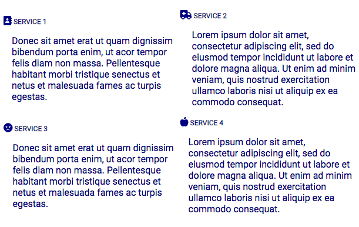
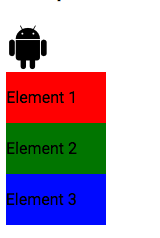
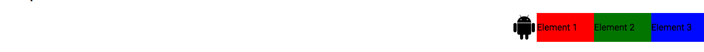
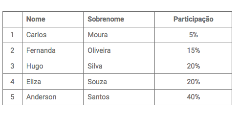

Usando “grid” e “flex” layouts, configure o componente 1 para que fique o mais próximo possível da formatação encontrada na Figura 1.
Figura 1:
Crie a responsividade do “componente 2” do site. Considere que essa região possui três breakpoints em 300px, 600px e 1080px, respectivamente ilustrado na Figura 2(a), Figura 2(b) e Figura 2(c).
Figura 2(a):
Figura 2(b):
Figura 2(c):
Estilize a tabela conforme ilustra a Figura 3. Contudo, considere os seguintes itens:
Figura 3:
